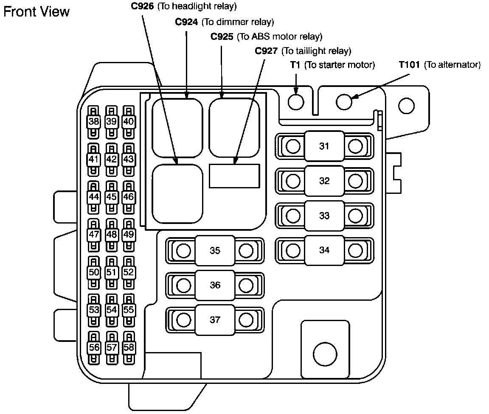
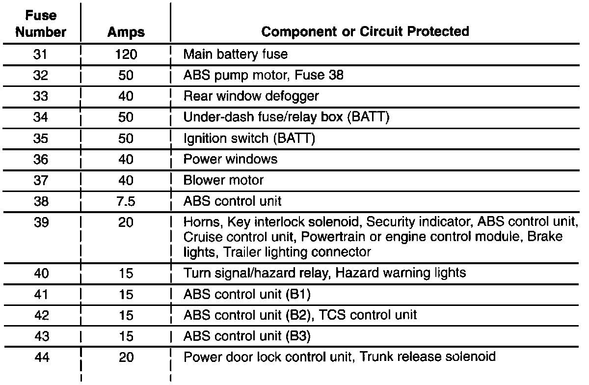
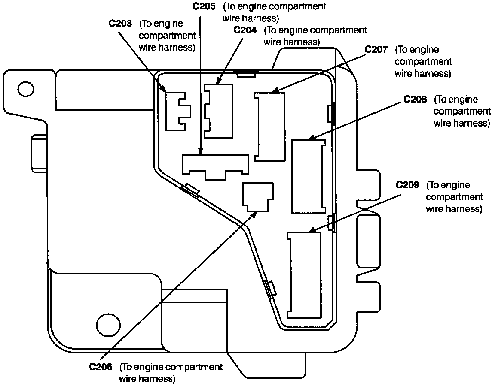
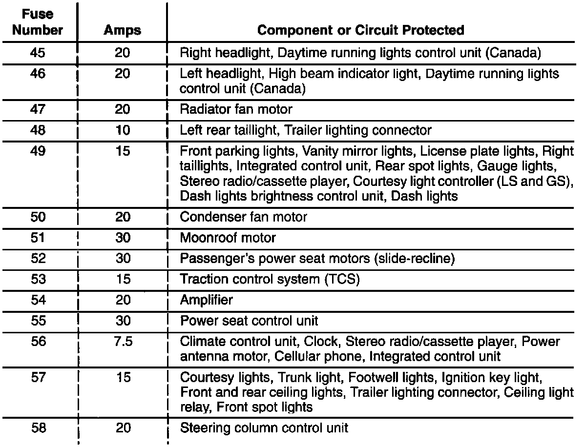

Under-Hood Fuse/Relay Box
Fuse/Relay Information- Under-hood Fuse/Relay Box (Part 1 Of 2):

Fuse/Relay Information- Under-hood Fuse/Relay Box (Part 1 Of 2):

Fuse/Relay Information- Under-hood Fuse/Relay Box (Part 2 Of 2):

Fuse/Relay Information- Under-hood Fuse/Relay Box (Part 2 Of 2):
